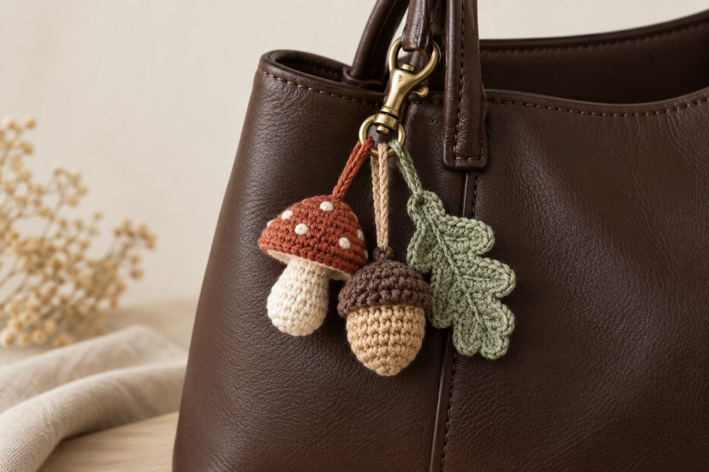
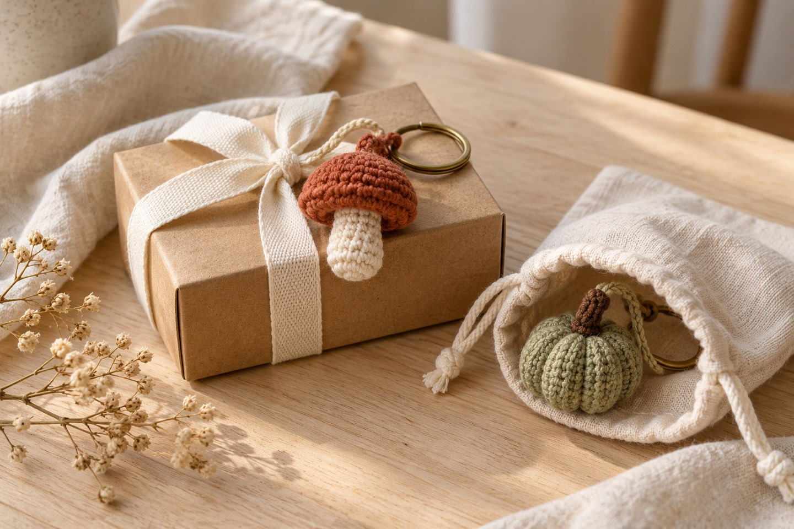
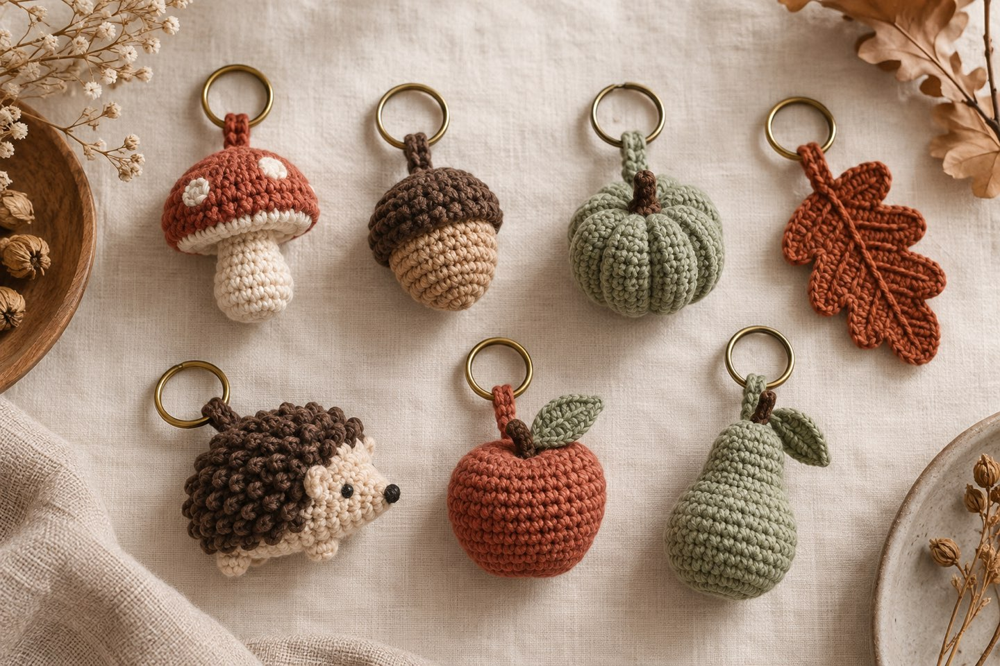
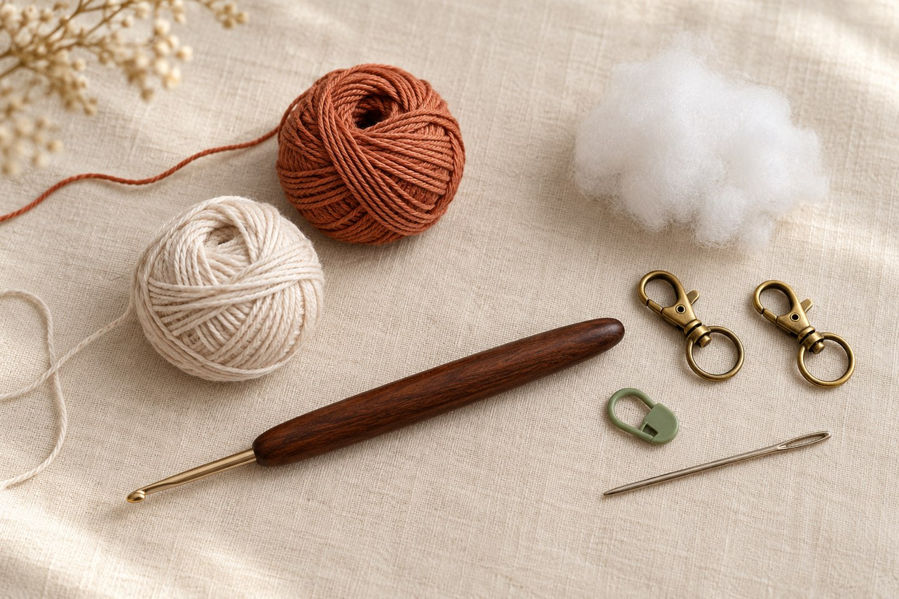
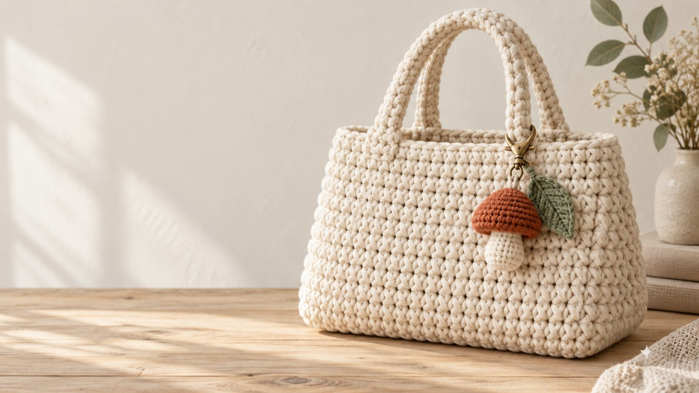

Crochet Bag Charms: The 2026 Trend – Plus a Free Mini Mushroom Pattern

In short
Crochet bag charms are one of the biggest crochet trends of 2026. They're small, quick to make (often in under an hour), use up scrap yarn and make any bag your own. Especially popular this fall: mushrooms, acorns, mini pumpkins, leaves and little animals. Scroll down for a free beginner pattern for a mini mushroom charm.
Take a look around on the train or in your favorite café: more and more bags have little figures dangling from them. What started with plush charms has well and truly reached the crochet world. Etsy, Pinterest and TikTok are full of handmade bag charms, and there are now whole books dedicated to the topic. Honestly, I can't think of a nicer project for a cozy fall evening.
Why are crochet bag charms so popular in 2026?
- Quick wins: Many charms can be finished in under an hour.
- Scrap yarn friendly: Each charm only needs a few grams of yarn.
- Personal style: One charm turns an everyday bag into a one-of-a-kind piece.
- Beginner friendly: Most shapes use nothing but single crochet.
- The perfect gift: Small and inexpensive but made with love – great as a little present or an advent calendar filler.

Which motifs are popular for fall?

| Motif | Why it works | Level |
|---|---|---|
| 🍄 Mushroom | A cottagecore favorite, simple dome and tube shapes | Beginner |
| 🌰 Acorn | Two colors with a textured little cap | Beginner |
| 🎃 Mini pumpkin | A fall classic, ribs made by wrapping with yarn | Beginner |
| 🍂 Fall leaf | Flat, no stuffing, very quick | Beginner |
| 🦔 Hedgehog / 🐱 Cat | Cute animal figures never go out of style | Intermediate |
| 🍎 Apple / 🍐 Pear | Tiny fruit is a much-loved charm motif | Beginner |
Tip: Want a bigger pumpkin for your fall decor? My pumpkin pattern works the same way – the small size makes a lovely charm with a thinner yarn and hook.
Pattern: Mini mushroom bag charm

- Size
- approx. 4–5 cm (1.5–2 in) tall
- Time
- about 45–60 minutes
- Level
- Beginner
- Yarn
- Cotton scraps in brown or rust for the cap, cream for the stem
- Tools
- 2.5–3 mm hook, toy stuffing, stitch marker, tapestry needle, key ring or lobster clasp

Abbreviations (US terms)
MR = magic ring · sc = single crochet (UK: double crochet) · inc = 2 sc in the same stitch · dec = single crochet 2 together · BLO = back loop only You'll find all other abbreviations in the abbreviations guide.
Work in continuous rounds and mark the first stitch of each round with a stitch marker. Want to brush up on the magic ring? You'll find it explained in the Crochet Basics.
Cap (brown or rust)
- MR, 6 sc (6)
- Inc × 6 (12)
- (Sc, inc) × 6 (18)
- Sc around (18)
- Sc around (18)
- BLO: (sc, dec) × 6 (12) – this creates the flat underside
- Stuff lightly. Dec × 6 (6)
Cut the yarn, weave it through the last 6 stitches, pull tight and weave in the end.
Stem (cream)
- MR, 6 sc (6)
- (Sc, inc) × 3 (9)
- Sc around (9)
- Sc around (9)
- Sc around (9)
Stuff lightly and leave a long tail for sewing.
Finishing
- Sew the open end of the stem to the center of the cap's underside.
- Join yarn at the top center of the cap and chain 10–12 for a hanging loop, or thread the key ring straight through a stitch.
- Optional: embroider a few cream dots onto the cap.
Durability tip: Bag charms get knocked around a lot. Weave in all ends extra securely and crochet fairly tightly so no stuffing shows through.
Styling: how to wear your charms

Styling tip: Group two or three charms into a fall set – for example a mushroom, an acorn and a leaf on one clasp. Colors that repeat in your outfit tie everything together.
More fall ideas
Looking for more projects for cozy season? My post Crochet Trends Fall 2026 covers the six biggest crochet trends of the season – from mohair to granny square vests.
Your turn! Which motif will be hanging from your bag? Show me your charm on Instagram or TikTok! 🍄
Frequently asked questions about crochet bag charms
What is a bag charm?
A bag charm is a small decoration that hangs from the handle, zipper or clasp of a bag. Crochet bag charms are tiny amigurumi figures or motifs on a key ring, and they are one of the most popular crochet projects of 2026.
Are crochet bag charms good for beginners?
Yes. Most charms are simple shapes worked in single crochet. If you know the magic ring, single crochet, increases and decreases, you can usually finish a charm in under an hour.
What yarn is best for crochet bag charms?
Cotton yarn with a 2.5–3 mm hook works best. It holds its shape, doesn't fuzz much and stands up to rubbing against a bag handle. Scrap yarn is ideal because each charm only needs a few grams.
Which bag charm motifs are popular for fall 2026?
Mushrooms, acorns, mini pumpkins, fall leaves, small animals such as hedgehogs or cats, and fruit such as apples and pears are popular for fall. Many people combine several charms into a themed set on one bag.